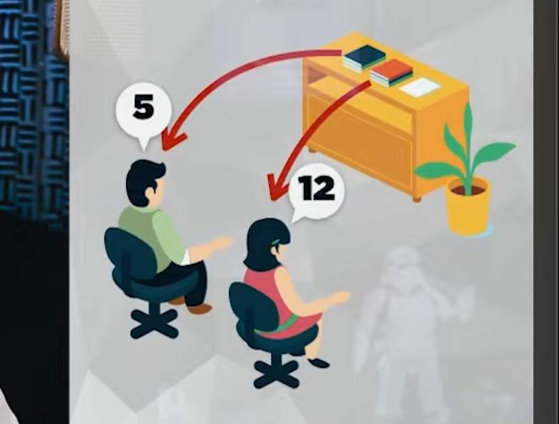

Os Métodos Acessores
Os métodos acessores são a interface pública para manipulação de dados internos protegidos.
Eles são métodos públicos usados para consultar (get) ou alterar(set) o valor de atributos que, por boa prática devem ser definidos como privados para garantir a ocultação da informação.
O uso indiscriminado desses métodos pode ferir o encapsulamento, agindo como uma "quebra de blindagem" do estado interno. Permitir que o estado seja alterado livremente de fora via set pode levar a comportamentos adversos e é comparado a programar de forma estruturada dentro da Orientação a Objetos.
O Método Get
e = nova Estante
De acordo com o que vimos anterioremente a linha de código acima está instanciando um objeto. Desta forma sabemos que já existe uma classe chamada Estante.
A estante poderá ter vários atributos:
- tamanho
- cor
- quantidadeDePrateleiras
- modelo
- fabricante
- modelo
Ela também poderá ter vários métodos:
- colocarItem ()
- retirarItem ()
Lembre-se, quando estamos aprendendo Programação Orientada a Objeto, é imprescindível um execercício: utilizar coisas que estão ao seu redor e tentar criar atributos e métodos para estas coisas. Isto fará com que possamos exercitar os conhecimentos sobre atributos e métodos e fazer com que possamos ter mais facilidade quando formos criar classes, objetos, atributos e métodos nas atividades propostas da disciplina.
Bem, voltando ao nosso objeto Estante vamos fazer um exercício mental: uma pessoa chegou perto da estante e vê que tem vários documentos e livros, esta pessoa quer saber quantos dos documentos desta estante são dela. Para isso vamos criar o atributo:
e = nova Estante
t = e.totDoc
Aqui no exemplo a pessoa usou o atributo totDoc e descobriu que tem 5 documentos dele.
De maneira similar outra pessoa chega utiliza o atributo totDoc e descobre que tem 12 documentos.

Até aqui tudo bem, temos duas pessoas que estão acessando a Classe Estante. Estas pessoas utilizam o atributo todDoc para saber quantos documentos naquela estante são seus. Mas você já parou para pensar se na vida real isto estaria correto? Você daria acesso da estante uma pessoa sabendo que nem todos os documentos que estão alí são dela? Vamos pensar em uma estante que contenha documentos importantes e sigilodos. Qual seria sua resposta?
O Exemplo da Conta no Banco
Vamos usar também outro exemplo. Pense no caixa de um banco, você quer depositar um valor na sua conta. O que você vai fazer? Você dá a volta no caixa, abre a gaveta e coloca o dinheiro lá dentro? É claro que não podemos fazer isso, alguém pode chegar alí em outro momento e roubar o dinheiro. Por isso podemos criar um mecanismo de proteção.
Os métodos acessores fazem exatamente isso, eles são métodos que dão acesso a determinada coisa. Estes métodos também podem ser denominados Getters. Um método acessor Getter é aquele que pega alguma informação. Lembrando do exemplo do banco, se você quer saber quanto dinheiro você tem na conta, seria por exemplo get.saldo. Os métodos acessores também poderão usar o "is" mas vamos deixar isso para depois.
Continuando no exemplo da estante, poderíamos dizer que com método Getter, a sigutação seria a seguinte: entre a estante e as duas pessoas do exemplo antererior seria colocada uma mesa para dificultar o acesso direto à estante.
Não adiantaria apenas colocar a mesa, mas colocaríamos também uma pessoa, esta pessoa teria acesso aos documentos (assim como um atendente de caixa no supermercado). Assim, se uma das duas pessoas quizesse saber quantos documentos ele possui na estante, esta pessoa iria perguntar ao atendente.
e = nova Estante
t = e.getTotDoc()
A variável "t" que é o total de documentos, recebe "e" que é o nome do objeto, ponto getTotDoc().
Desta forma não damos acesso direto ao atributo e isso garante uma segurança adicional. Se compararmos as duas formas de fazer percebemos podemos perceber uma coisa dentre as duas formas, a segunda não é mais difícil de fazer porém é bem mais segura já que a primeira permite acesso direto ao atributo.
Forma 1
e = nova Estante
t = e.TotDoc
Forma 2
e = nova Estante
t = e.getTotDoc()
Sendo assim, chegamos à conclusão de que Métodos Acessores conseguem acessar determinado atributo mantendo a segurança de acesso à ele.
Métodos Modificadores (Métodos Mutantes ou Setters)
Utilizando a mesma situação anterior, o mesmo exemplo onde temos a estatnte e uma das pessoas possui 5 documentos. Digamos que esta pessoa queira acrescentar um documento à estante.
e = nova Estante
e.TotDoc = e.TotDoc + 1
Pela lógica, poderíamos utilizar esta formula e ela seria funcional. Porém, quando pensamos que a outra pessoa poderá acessar a estante e insrir também novos documentos, tendo acesso direto à estante este processo não será de forma nenhuma seguro e nem organizado.
Faremos o seguinte,como no exemplo anterior, não iremos interagir diretamente com o objeto e o atributo. Teremos um intermediários e ao invés de passar o atributo diretamente para o objeto iremos passar para o método.
e = nova Estante
e.setTotDoc(doc)
Com isso teremos mais segurança e mais organização. É claro que o método terá também vários métodos internos para organizar a ordem (seja alfabética ou não), verificar a localização, a pasta do usuário, etc.
Com esta alteração simplificamos bastante. Desta forma abstraímos muitas coisas, mas este era o intuito, para o programador que irá utilizar esta classe posteriormente é bem melhor. É claro que dentro do método teremos um cálculo que irá realizar a soma dos documentos.
Os métodos Setters são mais abstratos que os métodos Getters.
Tecnicamente quando definimos os atributos da classe também temos os métodos Getters e Setters. Vamos usar exemplos simplificados para nosso exemplo.
| Caneta |
|---|
|
+ modelo - ponta |
|
+ getModelo() + getModelo(m) + setModelo() + setModelo(p) |